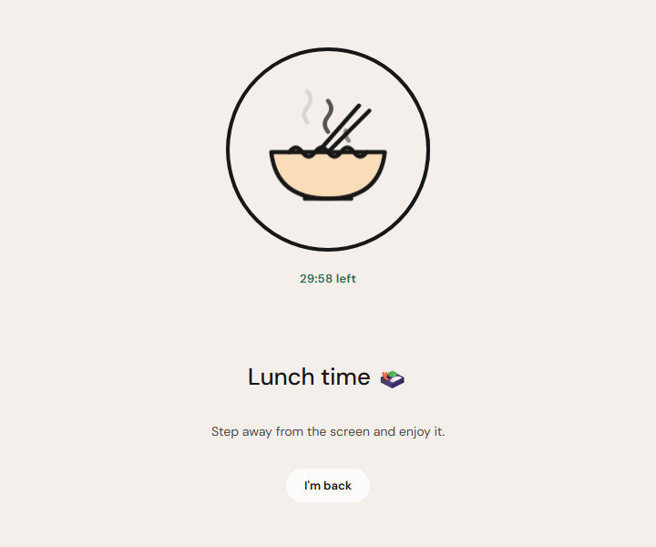
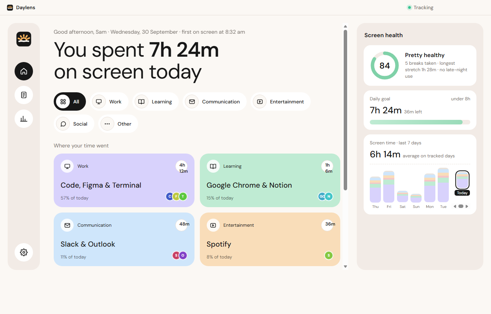
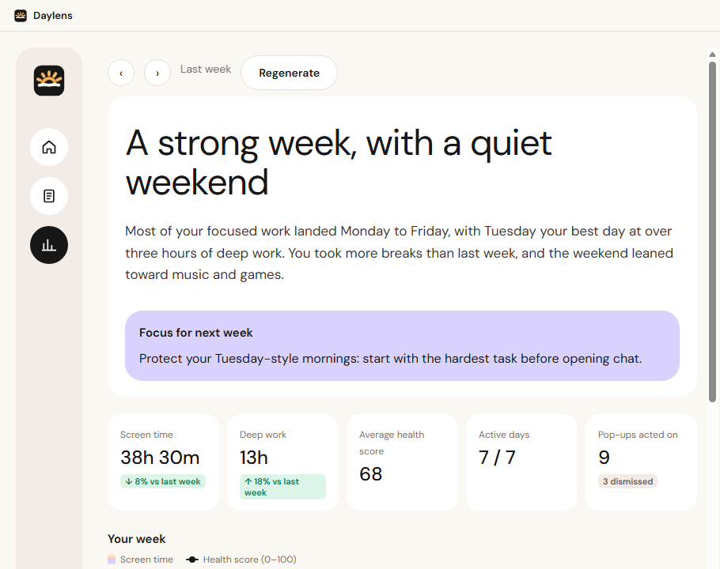
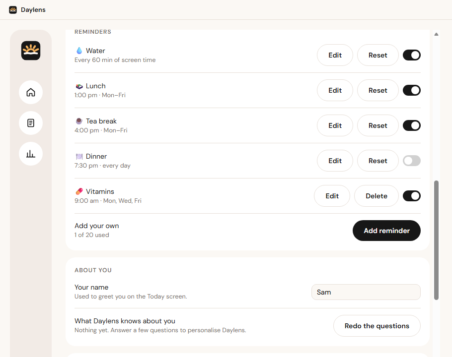
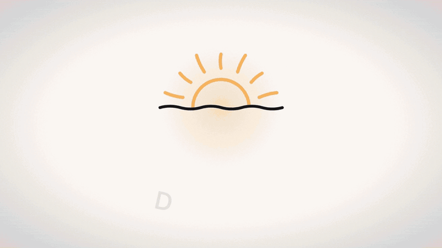

knows where the day went
apps and windows, grouped into work, learning, chat and fun. a timeline, a daily goal and a 0–100 screen health score.
daylens quietly notices where your screen time goes, writes you a daily report, and reminds you to drink water, eat lunch and look away from the screen. all on your pc.
free · windows 10 & 11 · no account
an hour of screen time. had a glass?
i had some
100%
on your pc

{ what it does }
apps and windows, grouped into work, learning, chat and fun. a timeline, a daily goal and a 0–100 screen health score.
a plain-language daily report and weekly insights, written by a small ai model on your own pc. search them, save pdfs, draft an email.
eye breaks, stretches, water, lunch and tea — with hand-drawn break screens. it waits while you're on a call.


> play showreel.mp4
your day, the on-device ai, reports, breaks, reminders and travel mode — with the sound on.
watch with sound
{ privacy }
everything is stored and understood on your pc. screen reading is opt-in, text only — never screenshots — and skips password managers, banking and private windows.
yes. no account, no subscription, no ads.
not unless you turn on the optional cloud writer with your own api key — and even then it never receives screen text. your history, labels and reports stay on your pc.
windows 10 (1903 or later) or windows 11, 64-bit, and an internet connection once to download the on-device ai models. 8 gb of ram or more for writing reports on your pc.
the installer isn't code-signed yet. choose more info, then run anyway.
not yet — daylens is windows-only for now.